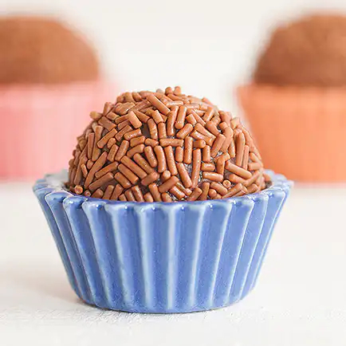

Brigadeiro

Description
This is the most famous brazillian homemade party candy.
Ingredients
- 1 tbsp butter
- 395g sweetened condensed milk
- 200g heavy cream
- 4 tbsp cocoa powder
Steps
- Mix all the ingredients in a pan untill homogenous.
- Bring to a low heat, making sure to constantly scrape into the sides and bottom of the pot to prevent your brigadeiro from sticking.
- Cook untill creamy, then turn off the heat and transfer to your desired container and put it in the fridge before serving.